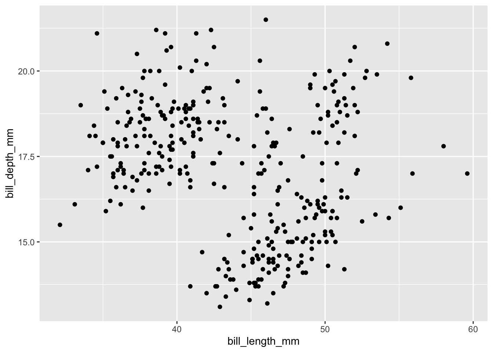
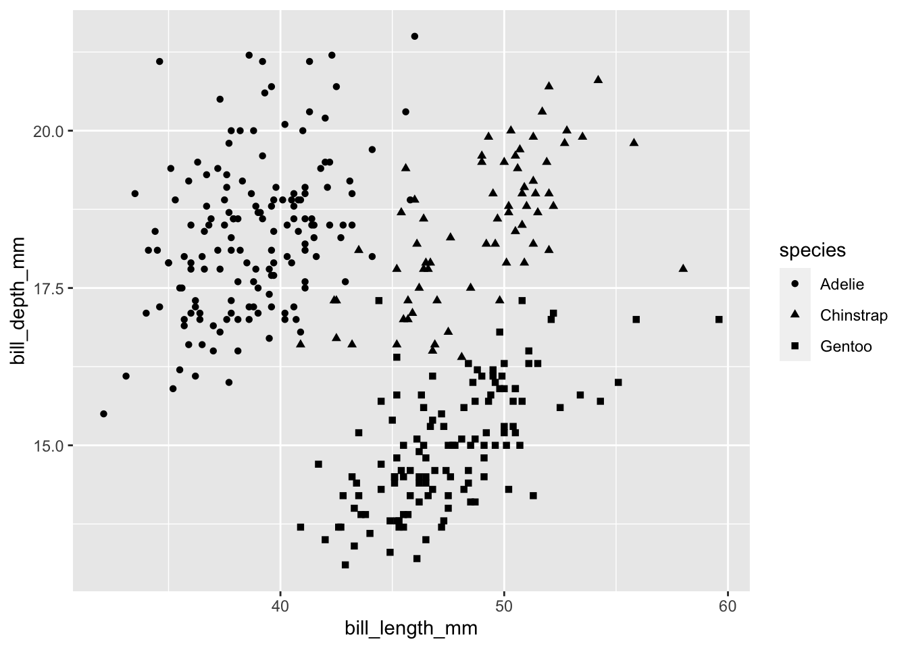
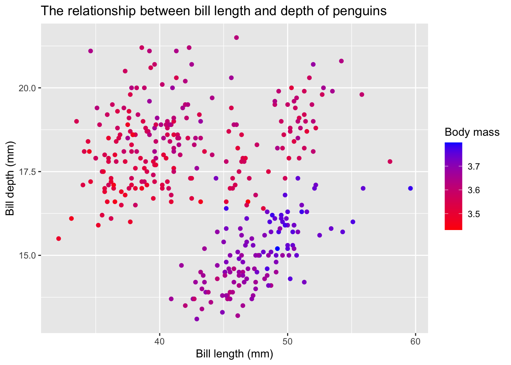

# install.packages("palmerpenguins")
library(tidyverse)
library(palmerpenguins)Week 6 Lab
Data visualization
We will be mainly using ggplot2 package (and maybe other extended packages) for data visualization in this class. ggplot2 is a system for declaratively creating graphics, based on The Grammar of Graphics. This lab is just a quick glimpse on ggplot2. And if you would like to learn more, check out Hadley Wickham’s ggplot2: Elegant Graphics for Data Analysis. Here is a cheatsheet by posit.
The Grammar of Graphics layers
ggplot2 code is easier to read if each line represents a new element. This means that as you add each layer, you should start a new line.


A breakdown of the common layers
- Data:
- your data, in tidy format, will provide ingredients for your plot
- use
dplyrtechniques to prepare data for optimal plotting format - usually, this means you should have one row for every observation that you want to plot
- Aesthetics (aes), to make data visible
- x, y: variable along the x and y axis
- colour: color of geoms according to data
- fill: the inside color of the geom
- group: what group a geom belongs to
- shape: the figure used to plot a point
- linetype: the type of line used (solid, dashed, etc)
- size: size scaling for an extra dimension
- alpha: the transparency of the geom
- Geometric objects (geoms - determines the type of plot)
geom_point(): scatterplotgeom_line(): lines connecting points by increasing value of xgeom_path(): lines connecting points in sequence of appearancegeom_boxplot(): box and whiskers plot for categorical variablesgeom_bar(): bar charts for categorical x axisgeom_histogram(): histogram for continuous x axisgeom_violin(): distribution kernel of data dispersiongeom_smooth(): function line based on data
- Facets
facet_wrap()orfacet_grid()for small multiples
- Statistics
- similar to geoms, but computed
- show means, counts, and other statistical summaries of data
- Coordinates - fitting data onto a page
- coord_cartesian to set limits
- coord_polar for circular plots
- coord_map for different map projections
- Themes
- overall visual defaults
- fonts, colors, shapes, outlines
Our goal: putting all the layers together!
Practices
We will be using the dataset from the palmerpenguins (Horst, Hill, and Gorman 2020) package, which contains size measurements for three penguin species observed on three islands in the Palmer Archipelago, Antarctica, collected from 2007 - 2009 by Dr. Kristen Gorman. An alternative common dataset is the iris package. 
str(penguins)tibble [344 × 8] (S3: tbl_df/tbl/data.frame)
$ species : Factor w/ 3 levels "Adelie","Chinstrap",..: 1 1 1 1 1 1 1 1 1 1 ...
$ island : Factor w/ 3 levels "Biscoe","Dream",..: 3 3 3 3 3 3 3 3 3 3 ...
$ bill_length_mm : num [1:344] 39.1 39.5 40.3 NA 36.7 39.3 38.9 39.2 34.1 42 ...
$ bill_depth_mm : num [1:344] 18.7 17.4 18 NA 19.3 20.6 17.8 19.6 18.1 20.2 ...
$ flipper_length_mm: int [1:344] 181 186 195 NA 193 190 181 195 193 190 ...
$ body_mass_g : int [1:344] 3750 3800 3250 NA 3450 3650 3625 4675 3475 4250 ...
$ sex : Factor w/ 2 levels "female","male": 2 1 1 NA 1 2 1 2 NA NA ...
$ year : int [1:344] 2007 2007 2007 2007 2007 2007 2007 2007 2007 2007 ...
Before ggplot2
You can always use R’s basic graphics for quick glimpse on the data
plot(penguins$bill_length_mm)plot(penguins$species)hist(penguins$bill_depth_mm)Basic layers
Data layer: Without any other information, nothing will be visualised.
ggplot(data = penguins)
Aesthetics layer: A group of parameters that specify what and how data is displayed.
Here, we are telling R to plot bill_length_mm on the x axis and bill_depth_mm on the y axis. We have not yet told R how we want to represent the data though, so our data will not yet be plotted.
ggplot(data = penguins, aes(x = bill_length_mm, y = bill_depth_mm))Geometric layer: it determines the visual representation of your data.
Let’s start with a scatter plot, with bill_length_mm on the x axis and bill_depth_mm on the y axis
ggplot(data = penguins,
aes(x = bill_length_mm,
y = bill_depth_mm)) + # Use the plus sign to add each additional layer
geom_point() # The geom layer determines what style of plot we are using.Warning: Removed 2 rows containing missing values (`geom_point()`).
You can further change the color or shape of the points.
ggplot(data = penguins,
aes(x = bill_length_mm,
y = bill_depth_mm)) +
geom_point(shape = 2, color = "#2b8cbe") # or you can use "blue", or check the shape option on the aesthetic specificationsWarning: Removed 2 rows containing missing values (`geom_point()`).ggplot(data = penguins,
aes(x = bill_length_mm,
y = bill_depth_mm,
col = species)) +
geom_point()Warning: Removed 2 rows containing missing values (`geom_point()`).ggplot(data = penguins,
aes(x = bill_length_mm,
y = bill_depth_mm,
shape = species)) +
geom_point()Warning: Removed 2 rows containing missing values (`geom_point()`).
You can also specify the size and the transparency in the aes()
ggplot(data = penguins,
aes(x = bill_length_mm,
y = bill_depth_mm,
size = body_mass_g,
alpha = flipper_length_mm)) +
geom_point()Warning: Removed 2 rows containing missing values (`geom_point()`).Lab layer: we can customize the legend section
ggplot(data = penguins,
aes(x = bill_length_mm,
y = bill_depth_mm,
col = species)) +
geom_point() +
labs(title = "The relationship between bill length and depth of penguins",
color = "Species", x = "Bill length (mm)", y = "Bill depth (mm)")Warning: Removed 2 rows containing missing values (`geom_point()`).
Facet layer: a way of dividing a plot into several windows according to some category in the data, to visually differentiate groupings.
- The
facet_wrap()function arranges the facets in a single row or column, which means it won’t produce any empty plots. - The
facet_grid()function arranges the facets in a grid, with one variable defining the rows and another variable defining the columns. It will produce a grid of plots for each combination of variables that you specify, even if some plots are empty.
ggplot(data = penguins,
aes(x = bill_length_mm, y = bill_depth_mm)) +
geom_point() +
facet_wrap(~species) # This splits the plot into three windows: one per species (or you can use `var()`)Warning: Removed 2 rows containing missing values (`geom_point()`).ggplot(data = penguins,
aes(x = bill_length_mm, y = bill_depth_mm)) +
geom_point() +
facet_wrap(island~species) Warning: Removed 2 rows containing missing values (`geom_point()`).ggplot(data = penguins,
aes(x = bill_length_mm, y = bill_depth_mm)) +
geom_point() +
facet_grid(island~species) Warning: Removed 2 rows containing missing values (`geom_point()`).Coordinate layer: we can also adjust the scale of our axes in the plot itself, rather than transforming the data.
ggplot(data = penguins,
aes(x = bill_length_mm, y = bill_depth_mm)) +
geom_point() +
facet_wrap(~species) +
coord_trans(x = "log10", y = "log10") # `coord_flip()` could be helpful for barplot.Warning: Removed 2 rows containing missing values (`geom_point()`).Theme layer: we can also customize the plot’s theme, which includes its background, grid lines, and other visual characteristics of the plot.
You can check out the different themes here. My personal preferences are theme_bw and theme_classic().
ggplot(data = penguins,
aes(x = bill_length_mm, y = bill_depth_mm)) +
geom_point() +
facet_wrap(~species) +
coord_trans(x = "log10", y = "log10") +
theme_bw()Warning: Removed 2 rows containing missing values (`geom_point()`).Colors (on aesthetics layer)
When we think about plotting, we may want to change the colour of our data points in order to communicate different parts of the data. We may want to:
- Differentiate between groups
- Represent data values
- Highlight specific elements of the data
Discrete/Qualitative colors
ggplot(data = penguins,
aes(x = bill_length_mm,
y = bill_depth_mm,
col = species)) +
geom_point() +
labs(title = "The relationship between bill length and depth of penguins",
color = "Species", x = "Bill length (mm)", y = "Bill depth (mm)")Warning: Removed 2 rows containing missing values (`geom_point()`).ggplot(data = penguins,
aes(x = bill_length_mm,
y = bill_depth_mm,
col = species)) +
geom_point() +
scale_colour_manual(values = c("grey55", "orange", "skyblue")) + # Note that the colour order will correspond to the order of the species given in the legend
labs(title = "The relationship between bill length and depth of penguins",
color = "Species", x = "Bill length (mm)", y = "Bill depth (mm)")Warning: Removed 2 rows containing missing values (`geom_point()`).Gradient/Sequential colors
Here we are using we are colouring our data points by body mass pf the penguins using a gradient.
ggplot(data = penguins,
aes(x = bill_length_mm,
y = bill_depth_mm,
col = log10(body_mass_g))) +
geom_point() +
labs(title = "The relationship between bill length and depth of penguins",
color = "Body mass", x = "Bill length (mm)", y = "Bill depth (mm)")Warning: Removed 2 rows containing missing values (`geom_point()`).ggplot(data = penguins,
aes(x = bill_length_mm,
y = bill_depth_mm,
col = log10(body_mass_g))) +
geom_point() +
scale_color_gradient(low = "red", high = "blue") +
labs(title = "The relationship between bill length and depth of penguins",
color = "Body mass", x = "Bill length (mm)", y = "Bill depth (mm)")Warning: Removed 2 rows containing missing values (`geom_point()`).
Different color palettes - Color Brewer and Virdis
#install.packages("RColorBrewer")
library(RColorBrewer)ggplot(data = penguins,
aes(x = bill_length_mm,
y = bill_depth_mm,
col = species)) +
geom_point() +
scale_color_brewer(palette = "Dark2") +
labs(title = "The relationship between bill length and depth of penguins",
color = "Species", x = "Bill length (mm)", y = "Bill depth (mm)")Warning: Removed 2 rows containing missing values (`geom_point()`).ggplot(data = penguins,
aes(x = bill_length_mm,
y = bill_depth_mm,
col = species)) +
geom_point() +
scale_color_viridis_d() +
labs(title = "The relationship between bill length and depth of penguins",
color = "Species", x = "Bill length (mm)", y = "Bill depth (mm)")Warning: Removed 2 rows containing missing values (`geom_point()`).ggplot(data = penguins,
aes(x = bill_length_mm,
y = bill_depth_mm,
col = log10(body_mass_g))) +
geom_point() +
scale_color_viridis_c() +
labs(title = "The relationship between bill length and depth of penguins",
color = "Body mass", x = "Bill length (mm)", y = "Bill depth (mm)")Warning: Removed 2 rows containing missing values (`geom_point()`).
Different geom_* plot
Scatter plot is only the starting point! We can way much more plots… 
Scatterplot and linear-fit
penguins %>%
ggplot(aes(x = bill_length_mm,
y = bill_depth_mm)) +
geom_point(alpha = 0.5) +
geom_smooth(method = lm, color = "red") + # or you can use `loess` for local smoothes
labs(title = "The relationship between bill length and depth of penguins",
x = "Bill length (mm)", y = "Bill depth (mm)") +
theme_bw()`geom_smooth()` using formula = 'y ~ x'Warning: Removed 2 rows containing non-finite values (`stat_smooth()`).Warning: Removed 2 rows containing missing values (`geom_point()`).penguins %>%
ggplot(aes(x = bill_length_mm,
y = bill_depth_mm,
color = species,
shape = species)) +
geom_point(alpha = 0.5) +
geom_smooth(method = lm, se = F) + # or you can use `loess` for local smoothes
labs(title = "The relationship between bill length and depth of penguins",
x = "Bill length (mm)", y = "Bill depth (mm)") +
theme_bw()`geom_smooth()` using formula = 'y ~ x'Warning: Removed 2 rows containing non-finite values (`stat_smooth()`).Warning: Removed 2 rows containing missing values (`geom_point()`).Histograms and density plots
A histogram is an accurate graphical representation of the distribution of numeric data.There is only one aesthetic required: the x variable.
penguins %>%
ggplot(aes(x = bill_length_mm)) +
geom_histogram(binwidth = 0.8) +
labs(title = "Histogram of penguin bill length",
x = "Bill length (mm)", y = "Count") +
theme_bw()Warning: Removed 2 rows containing non-finite values (`stat_bin()`).A density plot can further show the distribution patterns of a numerical variable. If we want to combine histogram and density plot, we need to add the argument aes(y = ..density..) in geom_histogram() for the histogram to take the same dimension as the density plot on the Y-axis and thus show up correctly.
penguins %>%
ggplot(aes(x = bill_length_mm)) +
geom_histogram(aes(y = ..density..), binwidth = 1, fill = "grey") +
geom_density() +
labs(title = "Histogram and density plot of penguin bill length",
x = "Bill length (mm)", y = "Density") +
theme_bw()Warning: The dot-dot notation (`..density..`) was deprecated in ggplot2 3.4.0.
ℹ Please use `after_stat(density)` instead.Warning: Removed 2 rows containing non-finite values (`stat_bin()`).Warning: Removed 2 rows containing non-finite values (`stat_density()`).
penguins %>%
ggplot(aes(x = bill_length_mm, fill = species)) +
geom_histogram(aes(y = ..density..), binwidth = 1, alpha = 0.5, color = "black") +
geom_density() +
labs(title = "Histogram and density plot of penguin bill length",
fill = "Species", x = "Bill length (mm)", y = "Density") +
theme_bw()Warning: Removed 2 rows containing non-finite values (`stat_bin()`).Warning: Removed 2 rows containing non-finite values (`stat_density()`).?labs()You can further add the mean line
mean_species <- penguins %>%
group_by(species) %>%
summarise(group_mean=mean(bill_length_mm, na.rm = T))
ggplot(data = penguins, aes(x = bill_length_mm, fill = species)) +
geom_histogram(aes(y = ..density..), binwidth = 1, alpha = 0.5) +
geom_density() +
geom_vline(data = mean_species, aes(xintercept=group_mean, color=species),
linetype="dashed", show.legend = F) +
labs(title = "Histogram and density plot of penguin bill length",
fill = "Species", x = "Bill length (mm)", y = "Density") +
theme_bw()Warning: Removed 2 rows containing non-finite values (`stat_bin()`).Warning: Removed 2 rows containing non-finite values (`stat_density()`).Boxplot: a popular way to plot the distribution of data across a grouping variable.
penguins %>%
ggplot(aes(x = species,
y = bill_length_mm,
fill = species)) + # specify species as a grouping variable
geom_boxplot(show.legend = FALSE) +
#geom_point(alpha = 0.3, position = position_jitter(width = 0.2)) +
labs(title = "Boxplot of penguin bill length",
x = "Species", y = "Bill length (mm)") +
theme_bw()Warning: Removed 2 rows containing non-finite values (`stat_boxplot()`). If you are making comparisons between these groups, you can also use
If you are making comparisons between these groups, you can also use ggsignif package to calculates the significance of a difference between groups and adds the annotation to the plot in a single line of code.
#install.packages("ggsignif")
library(ggsignif)
penguins %>%
ggplot(aes(x = species,
y = bill_length_mm,
fill = species)) + # specify species as a grouping variable
geom_boxplot(show.legend = FALSE) +
labs(title = "Boxplot of penguin bill length",
x = "Species", y = "Bill length (mm)") +
geom_signif(
# which groups should be compared?
comparisons = list(c("Adelie","Chinstrap"), c("Chinstrap", "Gentoo")),
map_signif_level=TRUE) +
theme_bw()Warning: Removed 2 rows containing non-finite values (`stat_boxplot()`).Warning: Removed 2 rows containing non-finite values (`stat_signif()`).penguins %>%
ggplot(aes(x = species,
y = bill_length_mm,
fill = species)) + # specify species as a grouping variable
geom_boxplot(show.legend = FALSE) +
labs(title = "Boxplot of penguin bill length",
x = "Species", y = "Bill length (mm)") +
geom_signif(
# which groups should be compared?
comparisons = list(c("Adelie","Chinstrap"), c("Chinstrap", "Gentoo")),
map_signif_level=TRUE) +
theme_bw() +
coord_flip()Warning: Removed 2 rows containing non-finite values (`stat_boxplot()`).Warning: Removed 2 rows containing non-finite values (`stat_signif()`).Violin plot: similar to boxplot, a violin’s shape represents the distribution of points that is obscured in a boxplot’s summarisation, allowing for a more accurate representation of the data.
penguins %>%
ggplot(aes(x = species,
y = bill_length_mm,
fill = species)) + # specify species as a grouping variable
geom_violin(show.legend = FALSE) +
geom_point(alpha = 0.3, position = position_jitter(width = 0.2)) +
labs(title = "Boxplot of penguin bill length",
x = "Species", y = "Bill length (mm)") +
theme_bw()Warning: Removed 2 rows containing non-finite values (`stat_ydensity()`).Warning: Removed 2 rows containing missing values (`geom_point()`).Additionally, you can also add the summary statistics in the plot.
penguins %>%
ggplot(aes(x = species,
y = bill_length_mm,
fill = species)) + # specify species as a grouping variable
geom_violin(show.legend = FALSE) +
stat_summary(fun = "mean", geom = "point", color = "black", size = 6, shape = 8, show.legend = FALSE) +
labs(title = "Violin plot of penguin bill length",
x = "Species", y = "Bill length (mm)") +
theme_bw()Warning: Removed 2 rows containing non-finite values (`stat_ydensity()`).Warning: Removed 2 rows containing non-finite values (`stat_summary()`).Combine two plots
There are multiple ways to do combine two plots. For instance, both cowplot and patchwork packages could do the same job.
#install.package("cowplot")
library(cowplot)
Attaching package: 'cowplot'The following object is masked from 'package:lubridate':
stampdensity <- penguins %>%
ggplot(aes(x = bill_length_mm)) +
geom_histogram(aes(y = ..density..), binwidth = 1, fill = "grey") +
geom_density() +
labs(x = NULL, y = "Density") +
theme_bw()
boxplot <- penguins %>%
ggplot(aes(x = bill_length_mm)) +
geom_boxplot() +
labs(x = "Bill length (mm)") +
theme_classic()
plot_grid(density, boxplot, ncol = 1, rel_heights = c(2, 1),
align = 'v', axis = 'lr')Warning: Removed 2 rows containing non-finite values (`stat_bin()`).Warning: Removed 2 rows containing non-finite values (`stat_density()`).Warning: Removed 2 rows containing non-finite values (`stat_boxplot()`).Time-series plot
Since there is no temporal dimension for the penguins package, we are turning to the ’nycflights13` package in our previous tutorial.
library(nycflights13)
flights_nyc <- flights %>%
select(c(time_hour, month, carrier, origin, dest ))
flights_nyc$date <- as.Date(flights_nyc$time_hour)
str(flights_nyc)tibble [336,776 × 6] (S3: tbl_df/tbl/data.frame)
$ time_hour: POSIXct[1:336776], format: "2013-01-01 05:00:00" "2013-01-01 05:00:00" ...
$ month : int [1:336776] 1 1 1 1 1 1 1 1 1 1 ...
$ carrier : chr [1:336776] "UA" "UA" "AA" "B6" ...
$ origin : chr [1:336776] "EWR" "LGA" "JFK" "JFK" ...
$ dest : chr [1:336776] "IAH" "IAH" "MIA" "BQN" ...
$ date : Date[1:336776], format: "2013-01-01" "2013-01-01" ...flights_sum <- flights_nyc %>%
group_by(date) %>%
summarize(num = n())
flights_sum %>%
ggplot(aes(x = date, y = num)) +
geom_line() +
labs(title = "NYC flights in 2013", x = "Date", y = "Count") +
theme_bw()flights_nyc %>%
ggplot(aes(x = date)) +
geom_line(stat = "count") +
scale_x_date(date_labels = "%b", date_breaks = "1 month") +
geom_vline(xintercept = as.Date("2013-11-28"),
linetype = 2, color = 1, linewidth = 1) +
labs(title = "NYC flights in 2013", color = "Origin airport", x = "Date", y = "Count") +
theme_bw()flights_nyc %>%
ggplot(aes(x = date, color = origin)) +
geom_line(stat = "count") +
scale_x_date(date_labels = "%b", date_breaks = "1 month") +
geom_vline(xintercept = as.Date("2013-11-28"),
linetype = 2, color = 1, linewidth = 1) +
labs(title = "NYC flights in 2013", color = "Origin airport", x = "Date", y = "Count") +
theme_bw() +
annotate(geom="label",x=as.Date("2013-11-28"), angle=0,
y=100,label="Thanksgiving", size = 3)flights_nyc %>%
ggplot(aes(x = date, color = origin)) +
geom_line(stat = "count") +
scale_x_date(date_labels = "%b", date_breaks = "1 month") +
geom_vline(xintercept = as.Date("2013-11-28"),
linetype = 2, color = 1, linewidth = 1) +
labs(title = "NYC flights in 2013", color = "Origin airport", x = "Date", y = "Count") +
theme_bw() +
facet_grid(vars(origin))Fine-tuning your plots
flights_nyc_ts <- flights_nyc %>%
ggplot(aes(x = date, color = origin)) +
geom_line(stat = "count") +
scale_x_date(date_labels = "%b", date_breaks = "1 month") +
geom_vline(xintercept = as.Date("2013-11-28"),
linetype = 2, color = 1, linewidth = 1) +
labs(title = "NYC flights in 2013", color = "Origin airport", x = "Date", y = "Count") +
theme_bw() +
theme(text=element_text(family="Comic Sans MS", face="bold"),
title = element_text(size = 20),
axis.text = element_text(size = 15),
axis.title = element_text(size = 18),
legend.title = element_blank(),
legend.text = element_text(size = 18),
legend.position = "bottom",
strip.text.y = element_text(size = 18, face = "bold")) +
facet_grid(vars(origin)) +
annotate(geom="label",x=as.Date("2013-11-28"), angle=0,
y=100,label="Thanksgiving", size = 3)Save your plot!
ggsave(plot = flights_nyc_ts,
"image/nyc_flights", device = "png", dpi = 600, width = 15, height = 8)